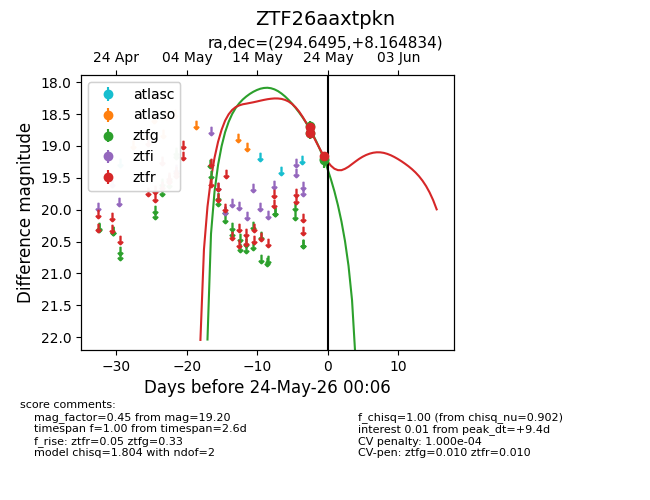
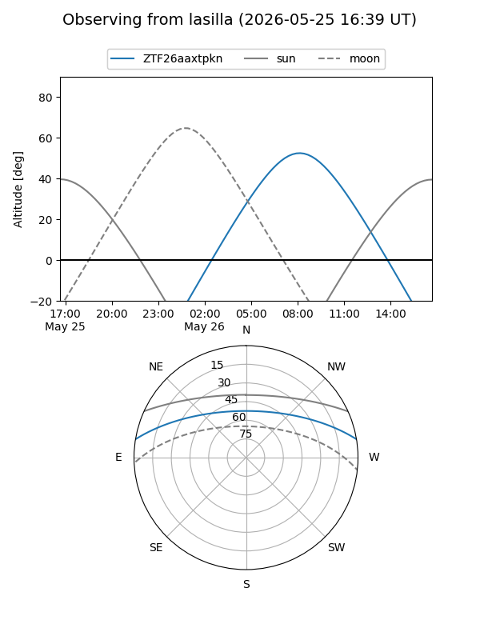
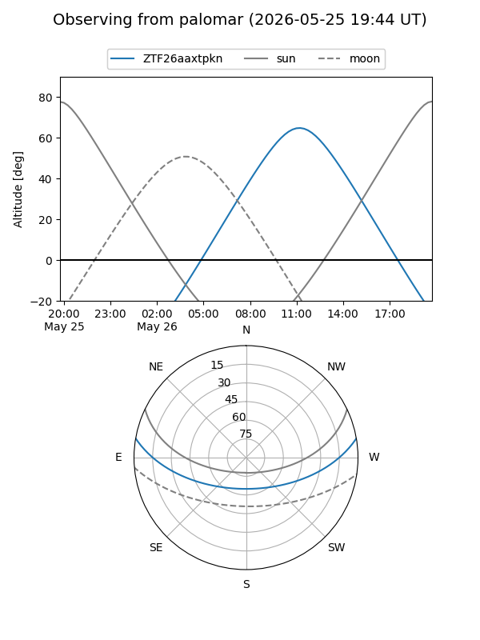
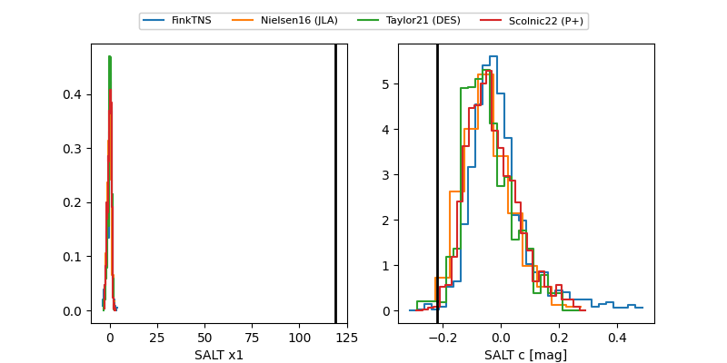

ZTF26aaxtpkn
Target ZTF26aaxtpkn at 2026-05-24 00:07
Aliases and brokers:
lsst-FINK: link
lsst-Lasair: link
lsst-ALeRCE: link
ztf-FINK: link
ztf-Lasair: link
ztf-ALeRCE: link
alt names
ZTF26aaxtpkn (ztf,fink_ztf)
Coordinates:
equatorial (ra, dec) = 294.6495,+8.16483
equatorial (HMS+DMS) = 19:38:35.87,+08:09:53.40
galactic (l, b) = (45.6461,-6.61771)
Flags:
likely cv: !
Photometry:
last ztfg=19.20, ztfr=19.16
4 ztfg, 3 ztfr detections
Lightcurve

Visibility


Additional plots
